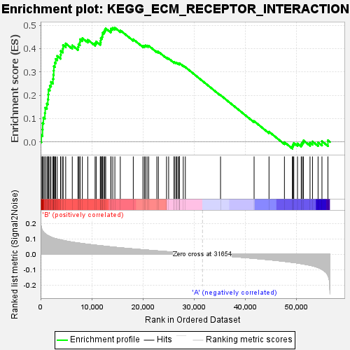
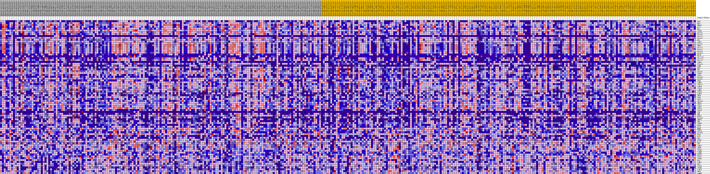
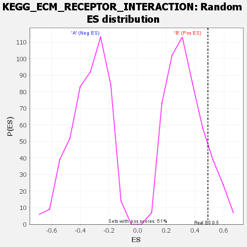

| | | Dataset | my.my.cls#B_versus_A.my.cls#B_versus_A_repos |
| Phenotype | my.cls#B_versus_A_repos |
| Upregulated in class | B |
| GeneSet | KEGG_ECM_RECEPTOR_INTERACTION |
| Enrichment Score (ES) | 0.4891467 |
| Normalized Enrichment Score (NES) | 1.454406 |
| Nominal p-value | 0.13779527 |
| FDR q-value | 0.661376 |
| FWER p-Value | 0.809 |
Table: GSEA Results Summary

Fig 1: Enrichment plot: KEGG_ECM_RECEPTOR_INTERACTION
Profile of the Running ES Score & Positions of GeneSet Members on the Rank Ordered List
| SYMBOL | TITLE | RANK IN GENE LIST | RANK METRIC SCORE | RUNNING ES | CORE ENRICHMENT | | 1 | SPP1 | na | 146 | 0.173 | 0.0291 | Yes |
| 2 | SDC2 | na | 373 | 0.152 | 0.0531 | Yes |
| 3 | THBS3 | na | 399 | 0.150 | 0.0802 | Yes |
| 4 | SV2A | na | 551 | 0.144 | 0.1039 | Yes |
| 5 | FN1 | na | 839 | 0.134 | 0.1234 | Yes |
| 6 | ITGB5 | na | 903 | 0.132 | 0.1466 | Yes |
| 7 | COL6A2 | na | 1221 | 0.125 | 0.1638 | Yes |
| 8 | COL5A3 | na | 1411 | 0.121 | 0.1827 | Yes |
| 9 | COL2A1 | na | 1498 | 0.119 | 0.2031 | Yes |
| 10 | COL6A1 | na | 1535 | 0.119 | 0.2243 | Yes |
| 11 | GP5 | na | 1812 | 0.114 | 0.2403 | Yes |
| 12 | LAMC1 | na | 2034 | 0.111 | 0.2568 | Yes |
| 13 | COL5A2 | na | 2417 | 0.107 | 0.2696 | Yes |
| 14 | THBS2 | na | 2491 | 0.106 | 0.2877 | Yes |
| 15 | COL1A2 | na | 2574 | 0.105 | 0.3055 | Yes |
| 16 | COL5A1 | na | 2592 | 0.105 | 0.3244 | Yes |
| 17 | COL3A1 | na | 2798 | 0.103 | 0.3396 | Yes |
| 18 | COL6A3 | na | 2956 | 0.101 | 0.3553 | Yes |
| 19 | RELN | na | 3259 | 0.098 | 0.3680 | Yes |
| 20 | COL11A2 | na | 3912 | 0.093 | 0.3736 | Yes |
| 21 | COL11A1 | na | 3965 | 0.093 | 0.3897 | Yes |
| 22 | COL1A1 | na | 4351 | 0.090 | 0.3994 | Yes |
| 23 | LAMA1 | na | 4396 | 0.090 | 0.4150 | Yes |
| 24 | ITGA10 | na | 4913 | 0.086 | 0.4217 | Yes |
| 25 | COMP | na | 6198 | 0.079 | 0.4134 | Yes |
| 26 | SDC3 | na | 7316 | 0.073 | 0.4071 | Yes |
| 27 | TNC | na | 7420 | 0.073 | 0.4187 | Yes |
| 28 | COL4A2 | na | 7693 | 0.072 | 0.4270 | Yes |
| 29 | ITGB1 | na | 7715 | 0.071 | 0.4398 | Yes |
| 30 | ITGA7 | na | 8170 | 0.069 | 0.4445 | Yes |
| 31 | COL4A6 | na | 9229 | 0.065 | 0.4377 | Yes |
| 32 | COL4A1 | na | 10666 | 0.059 | 0.4231 | Yes |
| 33 | IBSP | na | 10878 | 0.058 | 0.4301 | Yes |
| 34 | LAMB1 | na | 11680 | 0.055 | 0.4261 | Yes |
| 35 | ITGA11 | na | 11765 | 0.055 | 0.4348 | Yes |
| 36 | LAMA4 | na | 11784 | 0.055 | 0.4446 | Yes |
| 37 | ITGA5 | na | 12015 | 0.054 | 0.4505 | Yes |
| 38 | LAMB2 | na | 12121 | 0.054 | 0.4585 | Yes |
| 39 | ITGA9 | na | 12141 | 0.054 | 0.4681 | Yes |
| 40 | LAMC3 | na | 12407 | 0.053 | 0.4731 | Yes |
| 41 | TNXB | na | 12582 | 0.052 | 0.4796 | Yes |
| 42 | CD44 | na | 12742 | 0.052 | 0.4862 | Yes |
| 43 | CD36 | na | 13742 | 0.048 | 0.4774 | Yes |
| 44 | ITGA2B | na | 13783 | 0.048 | 0.4855 | Yes |
| 45 | THBS1 | na | 14121 | 0.047 | 0.4881 | Yes |
| 46 | ITGA1 | na | 14534 | 0.045 | 0.4891 | Yes |
| 47 | LAMA2 | na | 15593 | 0.042 | 0.4781 | No |
| 48 | ITGAV | na | 18137 | 0.035 | 0.4395 | No |
| 49 | ITGA8 | na | 20024 | 0.030 | 0.4116 | No |
| 50 | VTN | na | 20312 | 0.029 | 0.4118 | No |
| 51 | TNN | na | 20538 | 0.028 | 0.4130 | No |
| 52 | HSPG2 | na | 20850 | 0.027 | 0.4125 | No |
| 53 | COL6A6 | na | 21166 | 0.026 | 0.4118 | No |
| 54 | THBS4 | na | 22748 | 0.022 | 0.3879 | No |
| 55 | TNR | na | 23049 | 0.021 | 0.3865 | No |
| 56 | ITGB3 | na | 24643 | 0.017 | 0.3615 | No |
| 57 | CHAD | na | 25057 | 0.016 | 0.3572 | No |
| 58 | SV2B | na | 26121 | 0.014 | 0.3409 | No |
| 59 | HMMR | na | 26158 | 0.014 | 0.3428 | No |
| 60 | ITGA4 | na | 26473 | 0.013 | 0.3395 | No |
| 61 | COL4A4 | na | 26664 | 0.012 | 0.3384 | No |
| 62 | CD47 | na | 26926 | 0.012 | 0.3359 | No |
| 63 | SV2C | na | 27157 | 0.011 | 0.3339 | No |
| 64 | GP9 | na | 27175 | 0.011 | 0.3356 | No |
| 65 | ITGB7 | na | 27191 | 0.011 | 0.3373 | No |
| 66 | DAG1 | na | 27917 | 0.009 | 0.3261 | No |
| 67 | VWF | na | 28326 | 0.008 | 0.3204 | No |
| 68 | LAMA5 | na | 35215 | -0.009 | 0.2002 | No |
| 69 | AGRN | na | 41781 | -0.026 | 0.0889 | No |
| 70 | ITGA3 | na | 44700 | -0.035 | 0.0437 | No |
| 71 | ITGB8 | na | 47718 | -0.046 | -0.0012 | No |
| 72 | LAMB4 | na | 49277 | -0.052 | -0.0192 | No |
| 73 | GP1BA | na | 49387 | -0.053 | -0.0115 | No |
| 74 | ITGA2 | na | 49551 | -0.053 | -0.0047 | No |
| 75 | ITGB4 | na | 50274 | -0.056 | -0.0071 | No |
| 76 | GP6 | na | 51003 | -0.060 | -0.0089 | No |
| 77 | LAMC2 | na | 51221 | -0.062 | -0.0014 | No |
| 78 | SDC1 | na | 51440 | -0.063 | 0.0063 | No |
| 79 | ITGA6 | na | 52726 | -0.071 | -0.0034 | No |
| 80 | ITGB6 | na | 53210 | -0.075 | 0.0018 | No |
| 81 | LAMA3 | na | 54301 | -0.086 | -0.0018 | No |
| 82 | SDC4 | na | 55061 | -0.098 | 0.0027 | No |
| 83 | LAMB3 | na | 56229 | -0.135 | 0.0069 | No |
Table: GSEA details [plain text format]

Fig 2: KEGG_ECM_RECEPTOR_INTERACTION
Blue-Pink O' Gram in the Space of the Analyzed GeneSet

Fig 3: KEGG_ECM_RECEPTOR_INTERACTION: Random ES distribution
Gene set null distribution of ES for KEGG_ECM_RECEPTOR_INTERACTION